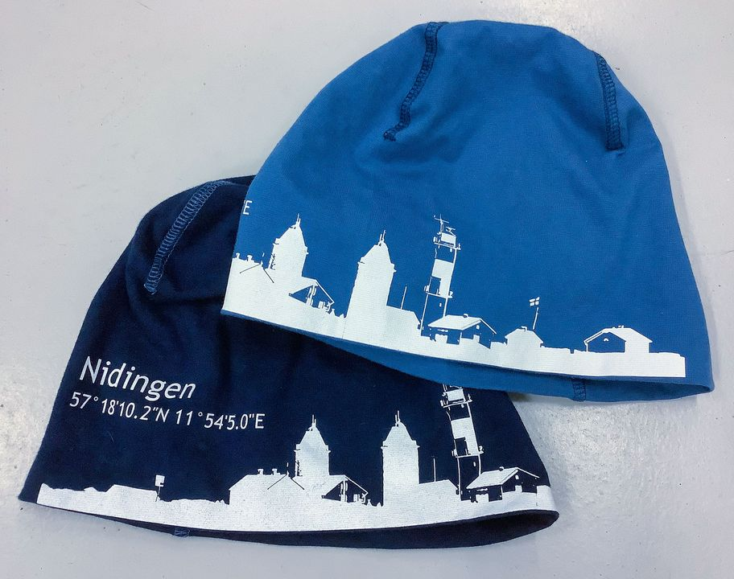
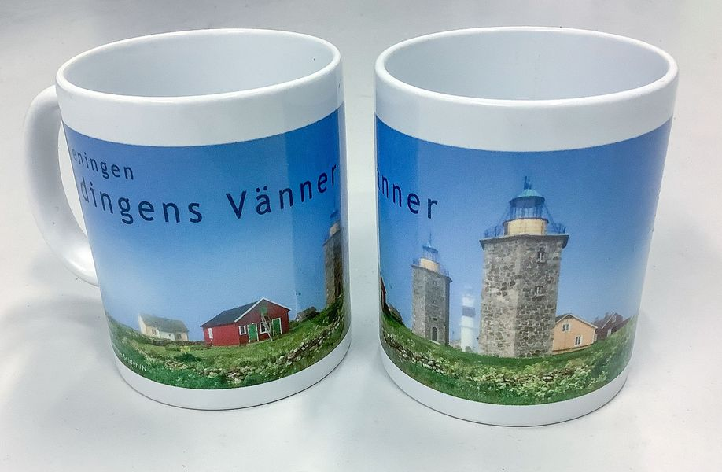

Vi arbetar för att bevara dubbelfyrarna och öns historia – för nuvarande och kommande generationer.
Föreningen Nidingens Vänner bildades med ett tydligt syfte: att bevara de unika dubbelfyrarna och omkringliggande byggnader på Nidingen för framtiden. Arbetet sker i nära samarbete med Statens Fastighetsverk som äger fastigheterna.
Vi arbetar för att restaurera och underhålla byggnaderna enligt antikvarisk standard, vilket innebär att alla åtgärder respekterar och bevarar det historiska ursprunget. Föreningens frivilliga bidrar med både praktiskt arbete och ekonomiskt stöd.
Utöver bevarandearbetet arbetar föreningen aktivt med att sprida kunskap om Nidingens historia och att välkomna besökare till ön. Vi samarbetar med Onsala Sjöfartsmuseum, Svenska Fyrsällskapet och Nidingens Fågelstation.
Restaurering och underhåll av dubbelfyrarna och historiska byggnader enligt antikvarisk standard.
Informera och engagera allmänheten om Nidingens historia och kulturarv genom besök, event och publikationer.
Samarbeta med myndigheter, museer och organisationer för ett starkt nätverk kring Nidingens framtid.

Årets årsmöte hölls på Hamnkrogen i Gottskär. Vi tackar avgående ordförande och välkomnar ny ledning.
Läs merRestaureringsarbetet med dörrarna på den västra fyren är nu avslutat och har utförts enligt antikvarisk standard.
Läs merDitt medlemskap är avgörande för att vi ska kunna fortsätta bevarandearbetet på Nidingen.
Föreningen leds av en engagerad styrelse som arbetar ideellt för Nidingens bästa.
Plats att fylla
info@nidingensvanner.sePlats att fylla
info@nidingensvanner.seBär med dig ett minne från Nidingen hem. Intäkterna går direkt till föreningens bevarandearbete.

En bok om livet och historien på Nidingen. Säljs via Fjärås Lantmanna.

En varm mössa med Nidingens logotyp – perfekt för kyliga dagar till havs eller som minne från ön.

En fin mugg med Nidingens motiv – för morgonkaffet med minnen från en unik ö i Kungsbacka skärgård.
Kontakta Elisabeth Adman Hedestad (tel: 0704 30 16 84) för beställning och frågor om butiken.
Frågor om föreningen, medlemskap, besök eller renovering? Vi svarar gärna.